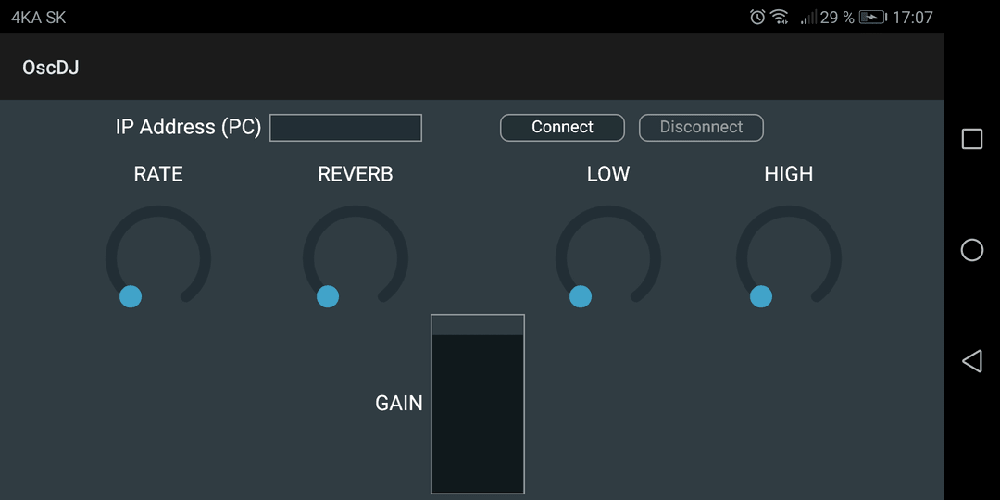

ABDJ serves as a DJ console in a mobile, which is connected to a computer wirelessly. It is made for Android and iOS.
This project works with a protocol called OSC - open sound control, capable for sending data from an application to another application within a network. In this case, it is going to send data to ABDJ Plugin, which is suitable for the all most used OS - Windows, Mac and Linux.
Go to tutorialWarning: This project is preparing for release, so this tutorial only shows, what is waiting for you. Release date is meanwhile unknown.
Overview of the ABDJ app on Android